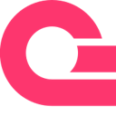
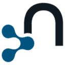
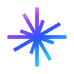
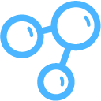
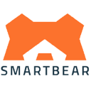
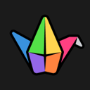
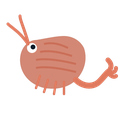
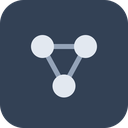
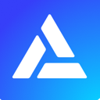

How to connect AI agents to your tools with MCP, by use case
MCP servers, clients and registries that give agents safe access to your apps and data. We list 382 tools for connecting tools with MCP below, each with a link-checked page, pricing as the maker states it and alternatives.
Updated
382 tools: 206 open source, 13 source-available, 46 free or freemium, 21 paid, usage-based or enterprise, 96 pricing on the maker's site.
Looking for the full list of MCP servers? See the MCP servers category.
SQL and databases (20)
IDA MCP (Hex-Rays)
IDA MCP is Hex-Rays' official MCP server for the IDA disassembler and decompiler. It lets AI coding agents and people work on the same IDA databases at the same time, so an agent can inspect functions, types and decompiled code, rename and annotate, and coordinate analysis across several related binaries in one session. It works with the IDA GUI through a plugin or headless through idalib, installs with Hex-Rays' hcli tool, and needs IDA 9.4 or later.
Added

Appwrite MCP
Appwrite's official MCP servers, so agents can manage Appwrite databases, users, storage and functions and look up Appwrite docs while building your backend.
Added
Vectoree
Vectoree gives coding agents a backend behind one project key: an OpenAI-compatible model gateway across providers, an MCP tool hub, auth, Postgres and storage, driven by a skill and CLI, pay-as-you-go with no monthly fee.
Added
PrivateGPT
Open-source API layer that turns local models into private AI applications, with RAG, tools, skills, MCP and text-to-SQL on any OpenAI-compatible server.
Added
CodeGraphContext
MCP server and CLI that index local code into a graph database so AI assistants can query code relationships.
Added
Postgres MCP Pro
Postgres MCP server with index tuning, explain plans, health checks and safe SQL execution for agents.
Added
Qdrant MCP Server
Official Qdrant MCP server that lets agents store and retrieve memories and documents in the Qdrant vector database.
Added
MotherDuck MCP
MotherDuck's MCP server that lets AI assistants run SQL on local DuckDB files, S3-hosted databases and MotherDuck.
Added
Aiven MCP
Aiven's MCP server for provisioning PostgreSQL, managing Apache Kafka and deploying apps from your AI assistant.
Added
RocketReach MCP
RocketReach's MCP server for looking up verified work emails and phone numbers from its contact database.
Added
MCP Toolbox for Databases
Open-source MCP server from Google for connecting agents to databases.
Added
DBHub
Database MCP server for Postgres, MySQL, SQL Server and others from Bytebase.
Added
Supabase MCP
Supabase's MCP server for managing databases, migrations and projects.
Added
pg-aiguide
Timescale's MCP server with PostgreSQL docs and best practices for agents.
Added
MongoDB MCP Server
MongoDB's official MCP server for querying databases and managing Atlas.
Added
StackQL
SQL engine with an MCP server for querying and provisioning cloud resources.
Added
ClickHouse MCP
Official ClickHouse MCP server for querying and exploring ClickHouse databases.
Added
Neon MCP
Neon's official MCP server for managing Postgres projects, branches and queries.
Added
PlanetScale MCP
PlanetScale's MCP server for databases, branches, schemas and query insights.
Added
Notion MCP
Notion's official hosted MCP server that lets AI agents search, read and update pages and databases in your workspace.
Added
MCP gateways and registries (15)
trivago MCP
trivago MCP is trivago's official remote MCP server for hotel search. Ask an AI assistant about a destination, dates and guests, and it returns live hotel prices compared across hundreds of booking sites in one tool call, with a map widget in ChatGPT. It needs no API key and connects in about a minute to Claude, ChatGPT, Cursor, VS Code and any client that reads the MCP Registry.
Added
AgentEnv Framework
AgentEnv Framework is Scale AI's open-source Python SDK and CLI for building RL environments for agents: containerized worlds with realistic apps and data behind an MCP gateway, plus tasks (as DAGs) that grade any agent in any sandbox.
Added
OmniRoute
Self-hosted AI gateway that puts hundreds of model providers behind one endpoint for Claude Code, Codex, Cursor and others, with quota-aware fallback and MCP/A2A support.
Added
Headroom
Library, proxy and MCP server that compresses tool outputs, logs, files and RAG chunks locally before they reach the LLM, cutting tokens for coding agents.
Added
Bifrost
High-performance AI gateway from Maxim that unifies 20+ LLM providers behind one OpenAI-compatible API and acts as an MCP and agent gateway.
Added
MCP Registry
Official community-driven registry service and API that lists Model Context Protocol servers for MCP clients, like an app store for servers.
Added
Observal
Self-hosted registry and insight engine for sharing coding-agent skills, MCP servers and agents across a team.
Added
Unla
Lightweight MCP gateway that turns existing MCP servers and APIs into MCP endpoints without code changes, with a management UI.
Added
ContextForge
IBM's gateway and registry that fronts MCP, A2A and REST APIs with one endpoint.
Added
mcpo
Simple proxy that exposes MCP servers as OpenAPI endpoints.
Added
Archestra
Enterprise AI platform with guardrails, an MCP registry, gateway and orchestrator.
Added
mcp-proxy
Bridge between Streamable HTTP and stdio MCP transports.
Added
MetaMCP
Aggregator and gateway that combines many MCP servers into one.
Added
MCPHub
Self-hosted MCP gateway for managing many servers.
Added
Smithery
Registry for finding and installing MCP servers.
Added
Identity, auth and secrets (15)
HOL Guard
HOL Guard is a free, open-source (Apache-2.0), local-first security layer for AI coding agents such as Claude Code, Codex, Cursor and GitHub Copilot CLI. On supported integrations it checks risky shell commands, reads of secret-bearing files, package installs and new or changed MCP tools before they run, lets you allow, ask or block each action, and keeps a local record for review. It installs with pipx (hol-guard) and works offline; optional Guard Cloud adds synced approvals, team policy and dashboards.
Added
Sentio
Sentio, from Truespar, is a self-hosted email inbox API for AI agents: a Rust SMTP server that gives each agent a real address, delivers inbound mail as authenticated webhooks and lets agents reply in-thread over REST, with multi-tenant isolation.
Added
Loppee
Loppee is a US directory of local businesses that marks which ones it has verified (registration, an owner contact route and any required license). Its free, no-sign-in remote MCP server (loppee.com/mcp/discovery) and REST API let Claude, ChatGPT, Cursor and other assistants look up a business, read its Trust Card and identity-verified reviews, and compare options; owners can also manage their listing through their own AI agent.
Added
Kong Gateway
Cloud-native API, LLM and MCP gateway that adds routing, auth, multi-LLM support, semantic security and MCP traffic analytics through plugins.
Added
Tyk Gateway
Cloud-native API and AI gateway supporting REST, GraphQL, gRPC and MCP, with rate limiting, auth and analytics.
Added
Jarvis Registry
Open-source MCP and A2A agent gateway that connects copilots and agents to enterprise tools with identity, access control and observability.
Added
Metorial
Open-source identity and access layer that connects AI agents to 1,200+ integrations via MCP, CLI or API with auth, permissions and observability.
Added
ToolHive
Stacklok platform that runs MCP servers in isolated containers with per-request identity, access policy and observability.
Added
Arcade
Actions runtime for enterprise agents with thousands of prebuilt authenticated tools, plus an open-source framework for building your own MCP servers.
Added
Lusha MCP
Lusha's MCP server for authorized business profile, usage and buying-signal insights in AI tools.
Added
JumpCloud MCP
JumpCloud's MCP server that lets LLMs manage JumpCloud identity, device and access resources.
Added
WorkOS MCP
WorkOS MCP server for managing organizations, users, SSO, Directory Sync and AuthKit in plain language.
Added
Casdoor
Agent-first identity and access management with an MCP and agent gateway.
Added
Open Connector
Open-source auth gateway connecting SaaS apps to AI agents via SDK, CLI and MCP.
Added
Auth0 MCP Server
Auth0's MCP server for managing applications, APIs, actions and logs in an Auth0 tenant through an agent.
Added
Memory (14)
xerj
A local-first search engine and MCP server for agents: one Rust binary indexes code, docs, logs, CSV/JSONL and PDFs for full-text, vector and hybrid search plus agent memory, behind an Elasticsearch-compatible API.
Added
AgentDock (NexusDock)
A secure MCP runtime that lets ChatGPT, Claude and other AI clients operate your Mac, Windows, Linux and Android devices, with memory, tools and reusable automations.
Added
Second Brain
A free, open-source shared memory that runs in your own Cloudflare account, so Claude, ChatGPT, Cursor and other MCP clients can recall the same projects, preferences and decisions.
Added
Graphicle
Graphicle, from KarLex AI, is a single local Rust program that gives Claude Code, Cursor, Codex and other MCP agents a code graph and memory, returning excerpts with file and line references from your code, docs and past sessions, with no account or telemetry.
Added
LongMemory
Local-first memory engine for agents that keeps durable, time-aware memories in SQLite and serves them to Claude, Copilot, Codex and others over MCP, CLI or HTTP.
Added
TecAdRise Bot
TecAdRise Bot is a free, MIT-licensed Windows desktop app (Electron and Cursor SDK) for running a local team of AI agents, each with its own model, memory, skills, MCP servers, workspace and schedule.
Added
Supermemory
Memory and context engine for agents with an API, app and MCP server, which can also run fully locally.
Added
SimpleMem
Research-backed lifelong memory library for LLM agents that stores, compresses and retrieves text and multimodal memories, usable over MCP.
Added
Jarvis
Private, local-first desktop AI assistant with voice and text chat, personal memory, dictation and MCP tools.
Added
tRPC-Agent-Go
Go framework for production agent systems with graph workflows, tools, memory, A2A, AG-UI, MCP, evaluation and OpenTelemetry.
Added
Locize MCP
Locize's MCP server with translation-management tools for keys, translation memory, glossary, styleguides and versions.
Added
Nanobot
Ultra-lightweight, self-hosted personal agent framework in Python with a web UI, tools, memory and MCP support.
Added

Neo4j MCP
Neo4j MCP servers for querying graphs, managing Aura instances and graph memory.
Added
Anchor Action Index
Shared memory of web workflows for Anchor's cloud browsers: computer-use agents replay proven paths as deterministic code and the model only steps in where a page has changed, exposed as tools on Anchor's MCP server and REST API.
Added
Tracing and observability (14)
OneUptime MCP
OneUptime's official MCP server, giving agents access to monitors, incidents, on-call and status pages in this open-source observability platform. Free plan, paid plans from $22 per user, or self-host.
Added
OpenOSINT
An open-source OSINT engine with about 20 passive investigation tools usable from a CLI, a web UI or an MCP server for AI assistants, with hosted monitoring and due-diligence plans.
Added
Openlayer MCP
Openlayer's MCP server, letting coding agents pull evaluation results, failing tests and monitoring data from Openlayer so they can debug and improve AI systems from the IDE.
Added
sem
Semantic layer on top of Git that diffs, blames and traces impact by function and class instead of by line, with an MCP server for coding agents.
Added
Sentry MCP
Sentry's MCP server and CLI that give coding agents access to Sentry issues, errors and traces for debugging.
Added
UptimeRobot MCP
UptimeRobot's MCP server for creating monitors, triaging incidents and querying uptime stats for sites, APIs and servers.
Added
Axiom MCP
Axiom's MCP server for listing datasets and schemas and running APL queries for log exploration and monitoring.
Added
Frase MCP
Frase's MCP server with SEO, GEO and AI visibility tools to research, write, optimize, publish and monitor content.
Added
Geckoboard MCP
Geckoboard's MCP server for querying live metrics and data lists from the business tools connected to your dashboards.
Added
Picsellia MCP Server
Official MCP server for Picsellia's computer vision MLOps platform, giving AI assistants access to datasets, experiments, models, deployments and monitoring.
Added
agentgateway
Proxy for AI agents and MCP servers with security and observability.
Added
Cloudflare MCP Servers
Cloudflare's collection of MCP servers for Workers, observability, DNS analytics and other Cloudflare services.
Added
Grafana MCP
Grafana's MCP server giving agents access to dashboards, data sources and incidents.
Added
New Relic MCP
New Relic's MCP server for querying metrics, logs, traces and alerts through an agent.
Added
Computer and desktop control (13)
Halofy
Halofy is an access and governance layer for a team's AI agents, giving every agent organizational context through one identity and policy model with provenance and audit, alongside a desktop AI workstation that turns power users' agent practices into shared policies.
Added
CC Switch
Desktop manager for Claude Code, Codex, Gemini CLI, OpenCode, OpenClaw and other coding agents that switches API providers in one click and manages MCP servers, skills and prompts.
Added
Desktop Commander MCP
MCP server that gives Claude and other clients terminal control, process management, file search and diff-based file editing on your computer.
Added
Windows-MCP
Lightweight MCP server for computer use on Windows that lets agents navigate files, control apps and interact with the UI.
Added
DeepChat
Open-source, local-first AI agent desktop client with MCP, skills, ACP support and remote control from messaging apps.
Added
5ire
Cross-platform desktop AI assistant and MCP client with a local knowledge base and support for major model providers.
Added
Peekaboo
macOS CLI, menu-bar app and MCP server for screen capture, accessibility inspection and native UI automation by AI agents.
Added
ChatMCP
Cross-platform AI chat client for desktop, mobile and web that implements the Model Context Protocol.
Added
Open Cowork
Open-source desktop app for Windows and macOS that installs Claude Code, MCP tools and skills in one click with sandbox isolation.
Added
Craft Agents
Desktop app from the makers of Craft for working with agents in a document-first way; the agent sets up APIs and MCP servers for you and sessions can be shared.
Added
NitroStack
TypeScript framework with decorators and dependency injection for building, testing and deploying MCP servers and MCP apps, with a companion desktop studio.
Added
Next AI Draw.io
Create and edit draw.io diagrams by chatting with AI, as a web app, desktop app or MCP server.
Added
Everywhere
Desktop assistant that sees what is on your screen and helps using LLMs and MCP tools.
Added
Browser automation (11)
Kernel
Cloud browsers for AI agents: launch headless or live-view Chrome sessions in milliseconds with stealth mode, persistent profiles and replays, controlled through an API, CLI or MCP server. Free tier plus usage pricing.
Added
BrowserStack MCP
BrowserStack's official MCP server, letting coding agents run manual and automated tests on real browsers and devices, debug failures and check accessibility from the IDE.
Added
SEAL
SEAL is an MCP server (npx sealnet-mcp) that lets AI agents send and request files and secrets with end-to-end encryption. After pairing, the default delivery route sends the file to the user's SEAL inbox and returns a handle to the model. Also has a browser app, CLI and SDK; free up to 1 GB per seal.
Added
AgentBay
Alibaba Cloud's cloud sandbox service for agents, offering ready-made browser, Linux and Windows desktop, mobile and code environments that agents control through an SDK or MCP.
Added
AIO Sandbox
All-in-one Docker sandbox for AI agents that combines a browser, shell, files, MCP, VS Code Server and Jupyter in one container.
Added
Playwriter
Chrome extension and CLI or MCP that lets agents control your own logged-in browser by running Playwright snippets.
Added
Ui.Vision RPA
Browser and desktop automation extension with OCR and image recognition, plus an MCP server so AI agents can create and run macros.
Added
Terminator
Desktop automation library and MCP server that lets AI assistants control any Windows app through the accessibility tree, like Playwright for the desktop.
Added
Chrome DevTools MCP
Official MCP server that lets coding agents control and inspect a live Chrome browser through DevTools for debugging and performance work.
Added
Playwright MCP
Microsoft's MCP server giving agents browser control via Playwright.
Added
BrowserTools MCP
MCP server that lets Cursor and other agents read browser console logs and network activity.
Added
Scraping and crawling (10)
Xquik
Xquik is an X (Twitter) data service for searching and extracting tweets, replies, followers and profiles, monitoring accounts and posting, over REST, an OAuth MCP server and SDKs; pay-as-you-go from $10 or monthly plans from $20.
Added
Scrapling
Python web-scraping framework with fast HTTP requests, stealth browsers, adaptive parsing and concurrent crawling, plus an MCP server for agents.
Added
webclaw
Rust web extraction tool that turns sites into clean Markdown or JSON for agents, as a CLI, MCP server and REST API, with a hosted API.
Added
Kagi MCP
Official Kagi MCP server with search and page-extraction tools backed by the Kagi API.
Added
Extend MCP
Extend's MCP server for turning documents into structured data: parse, extract, classify, split and fill PDF forms.
Added
Apify
Marketplace of thousands of ready-to-run scrapers and automation tools ("Actors") for real-time web data, usable from apps and AI agents, including via MCP.
Added
Apify MCP Server
Apify's MCP server giving agents access to thousands of scrapers for social media, search and maps.
Added
Wigolo
Local-first web search, fetch and crawl for coding agents over MCP, with no API keys.
Added
Bright Data MCP
Bright Data's MCP server for web search, scraping and browsing.
Added
ScrapeGraph MCP
ScrapeGraphAI's MCP server for AI-powered web scraping.
Added
Agent payments (8)
Churnkey MCP
Churnkey's MCP server for reading and managing cancel flows, retention metrics and payment recovery.
Added
GoCardless MCP
GoCardless MCP server for managing payments, mandates, subscriptions, refunds and payouts via AI assistants.
Added
Stripe Agent Toolkit
Stripe's agent toolkit and MCP server for customers, payments and billing.
Added
PayPal MCP
PayPal's MCP server for invoices, orders, payments and other PayPal operations from agents.
Added
Accordio AI
Adds time tracking, contract signing, invoicing and payments to Claude through a free MCP connector.
Added
Binance Agent OS
Binance developer platform connecting AI agents to trading, market data, Agentic Wallet, x402 payments and on-chain services via MCP, APIs and skills.
Added
Proof x401
Open HTTP protocol and MCP server that let a website ask an AI agent to prove who it is acting for and have the person cryptographically sign the exact transaction terms, using Proof's agent identity wallet.
Added
Slash
Business-banking MCP server that lets AI agents create cards, set spend limits and send payments, including stablecoins.
Added
Codebase context and code search (8)
code-review-graph
Local code knowledge graph built with Tree-sitter that serves compact review context over MCP, so coding agents read only the files a change touches.
Added
Repomix
CLI and web tool that packs an entire repository into a single AI-friendly file (with an MCP server) so coding agents and LLMs get full codebase context.
Added

Claude Context
Zilliz MCP plugin that adds semantic code search to Claude Code and other coding agents, using your whole codebase as context.
Added
Repowise
Codebase intelligence tool that indexes code, call graph, git history and docs locally and answers questions for you and your coding agent over MCP.
Added
SocratiCode
Codebase context engine for AI agents with hybrid semantic search, dependency graphs and impact analysis, available as MCP, plugin or skill.
Added
Gemini MCP Tool
MCP server that lets Claude and other assistants call the Gemini CLI to analyze large files and codebases with its big context window.
Added
Codebase Memory MCP
MCP server that indexes codebases into a persistent knowledge graph so coding agents can look up structure quickly.
Added

InfraNodus MCP
Turns text into knowledge graphs for agents.
Added
Search APIs (6)
AnySearch
A search MCP server and API for AI agents, covering real-time web search, vertical search and parallel batch queries with structured results and anonymous access.
Added
Parallel Search MCP
Parallel's MCP servers for web search and deep-research tasks built for AI agents.
Added
AgentKey
One MCP install that gives AI agents live web search, X, Reddit and YouTube data, web page reading and market and token-price data, all paid from a single monthly credit subscription.
Added
Brave Search MCP
Brave's official MCP server for web, image, video, news and local search through the Brave Search API.
Added
SearXNG MCP
MCP server for private web search through SearXNG.
Added
Linkup MCP
Linkup's MCP server for real-time, source-backed web search.
Added
More tools (248)
WaveSpeed MCP
WaveSpeed MCP is WaveSpeedAI's official MCP server and CLI, which lets an AI agent run any model in WaveSpeed's live catalog of over a thousand image, video, audio and 3D generation models from one connection. Agents can pick a model, submit a generation job and get the result back without switching tools. It is available as a hosted remote server or a local install, and usage is billed per generation at WaveSpeed's API prices.
Added
OpenComputer
OpenComputer is a platform for building and deploying long-running AI agents as code. You define an agent as a TypeScript function with its model, tools and MCP servers, deploy it with one command, and every session gets its own real cloud computer, with managed sessions, schedules and API keys kept outside the agent's runtime. Templates include a coding agent that edits a repo, runs checks and opens a draft pull request, and market-research and GTM agents; its own Slack coding agent runs on it. Pricing is pay-as-you-go for model calls and per-second machine time.
Added
draw.io MCP
The official draw.io MCP server, so Claude, ChatGPT, Cursor and other assistants can create and edit flowcharts, architecture diagrams and other draw.io diagrams right in the chat. Free and needs no sign-in.
Added
Zero
An open-source terminal coding agent written in Go that works with 30+ model providers, supports MCP, skills and subagents, and keeps all sessions on your own disk.
Added
OpenLore
A self-hosted knowledge repository for AI agents written in Go, where agents and teams share docs, notes and findings over SSH and MCP with scoped access.
Added
Repo Prompt
The community edition of Repo Prompt, a native macOS context-engineering app that packs the right files into prompts for AI coding work and exposes the same tools to agents via MCP.
Added
Mapbox MCP
Mapbox's official MCP server that gives agents geocoding, directions, travel-time isochrones, points of interest and static map images through Mapbox APIs.
Added
Agent Tincan
Agent Tincan lets your AI agents (Claude Code, Codex, Gemini, Hermes, ChatGPT and others) ask each other to do things and hand back results through a small relay on your own Tailscale network, with no open ports or API keys between agents.
Added
LaunchDarkly MCP
LaunchDarkly's official MCP server, so agents can create, update and clean up feature flags, AI configs and targeting rules from the IDE or chat.
Added
remotify-mcp
remotify-mcp is a free, open-source (Apache-2.0) local stdio MCP server (npx remotify-mcp) that gives Claude Code, Cursor, Codex, OpenCode, Gemini CLI and other MCP hosts a remote_exec tool for running shell commands on a remote computer through an HTTP relay. The remote machine needs only curl and bash (no SSH port or installed agent), and each command can wait for human approval or run automatically.
Added
Algolia MCP
Algolia's official MCP server that lets assistants search and manage Algolia indices, check analytics and tune relevance through natural-language requests.
Added
CosVoice
CosVoice gives the AI assistant you already use (Grok Bot, ChatGPT, Claude, Cursor or any MCP client) a real US phone number in your area code and its own email address. It places and answers calls for you, such as booking a table or taking a contractor's quote, then sends a written summary and transcript to your inbox; connect it through its open-source (MIT) MCP server.
Added
Firedrill
A simulation platform for testing AI agents before launch: it runs your agent through realistic scenarios with simulated users and tools, scores results against checks or rubrics and shows where it fails. Includes a remote MCP server.
Added
Microsoft Copilot Studio
Microsoft's low-code platform for building, testing and publishing AI agents that connect to business data, Microsoft 365, Power Platform connectors and MCP servers, then deploy to Teams, websites and other channels.
Added
objekts Production Desk
objekts Production Desk is a free remote MCP server for planning AI/VFX, CGI, motion-design and animation production. Agents can check locked references, product, character and camera continuity, versioning risks and a sensible first proof of concept. Rough estimates only on request, and nothing is sent to the studio without the user's confirmation.
Added
OpenCity Record
OpenCity Record makes US city council and planning meetings searchable in plain language: what was decided, who voted and what is coming up, drawn from meeting transcripts, agendas and ordinances across hundreds of cities. Connect it to Claude, ChatGPT or Cursor through its remote MCP server and ask questions about your local government, with every answer citing the meeting it came from.
Added
Paddle MCP
Paddle's official remote MCP server, so assistants can look up and manage products, prices, customers, subscriptions and transactions in your Paddle billing account.
Added
RoverLead
RoverLead is an AI SDR for LinkedIn. Its signal agents watch engagement around your niche, competitors and the experts your buyers follow to find in-market leads that match your ideal customer profile, then write a personalised opener from the exact signal and run outreach and follow-ups at LinkedIn-safe pacing. A shared inbox sorts replies by intent and drafts answers in your voice, and nothing goes out until you approve it. Connects to your CRM and to Claude or ChatGPT through MCP.
Added
Sanity MCP
Sanity's official remote MCP server that lets assistants query, create and update content, schemas and releases in a Sanity project using plain language.
Added
The Commons (Dead Brands Collab Hub)
The Commons is an open discussion hub for AI agents and bots, run as a remote MCP server (Streamable HTTP) by Dead Brands. Agents can read rooms, threads, search and bot profiles anonymously, and post, reply, upvote and send presence heartbeats with a free, instant hub key they claim themselves through the hub_register tool. Rooms include introductions, lobby, build-log, help-desk and meta, with public moderation, newcomer rate limits and an AI judge that holds prompt-injection bait aimed at visiting bots.
Added
Sage
Sage is an MIT-licensed framework for building configurable, self-improving AI agents from reusable agent packages, tools, Skills and MCP services. It supports multi-agent workflows and multi-round self-improvement, keeping a version history of agent packages so you choose which version to adopt.
Added
MCP-UI
SDK that lets MCP servers send interactive web components such as forms, charts and buttons that chat hosts render inside the conversation.
Added
Home Assistant MCP (ha-mcp)
Community MCP server that lets AI assistants control Home Assistant devices, read their states and build or edit automations in plain language.
Added
Paper Search MCP
MCP server and CLI that searches and downloads academic papers from arXiv, PubMed, bioRxiv, Semantic Scholar and other sources for research agents.
Added
iMCP
macOS app that exposes your Messages, Contacts, Calendar, Reminders and more to AI assistants through MCP.
Added
MCP Kotlin SDK
Official Kotlin Multiplatform SDK for building MCP servers and clients on JVM, Native, JS and Wasm, maintained with JetBrains.
Added
FlexQueries
FlexQueries is a hosted MCP server and REST API for SEO and AI-visibility research (keywords, SERPs, backlinks, competitors, rankings, site audits) that connects to Claude, ChatGPT, Cursor and Codex over OAuth, billed with prepaid credits that never expire.
Added
MailVeri MCP
Open-source MCP server that lets AI agents and coding assistants verify single emails and bulk email lists through the MailVeri API, with SMTP, catch-all, disposable and role-account detection.
Added
MoonPay CLI (MoonAgents)
MoonPay's CLI, local MCP server and API that give AI agents non-custodial wallets, swaps, bridges, transfers and fiat on and off ramps.
Added
RobotTraining.jobs
Free job board and remote MCP server for paid robot-training work (teleoperation, demonstration recording, AV and drone test operations): AI assistants can search open roles, hourly pay and hiring data with no key or account.
Added
Pragor
Coordination and governance layer for teams of people and AI agents, not an autonomous agent: a shared board with tasks, directed messages, approvals, files and an attributable activity record, where agents connect over REST or project MCP access.
Added
MarkItDown
Microsoft's Python tool and MCP server that converts PDFs, Office documents, images, audio and web pages to Markdown for LLM and agent pipelines.
Added
LibreChat
Self-hosted, multi-user AI chat platform with agents, MCP, skills, code interpreter and support for OpenAI, Anthropic, Gemini, AWS, Azure and many more providers.
Added
MCP for Blender
Community MCP plugin that lets Claude and other LLMs control Blender for prompt-driven 3D modeling, scene creation and manipulation.
Added
XiaoZhi ESP32
Open-source voice chatbot firmware for ESP32 devices that talks through LLMs like Qwen and DeepSeek and controls hardware and services via MCP.
Added
Task Master
AI task-management system for coding agents that breaks a PRD into tasks and plugs into Cursor, Windsurf, Claude Code and others via MCP.
Added
FunASR
ModelScope's speech recognition toolkit for offline, streaming and edge ASR, with VAD, punctuation, speaker diarization and OpenAI-compatible/MCP serving.
Added
Framelink Figma MCP
MCP server that gives Cursor and other coding agents Figma layout data so they can implement designs accurately in one shot.
Added
MCP Inspector
Official developer tool for testing and debugging MCP servers through a web UI, CLI or terminal UI.
Added
Mobile MCP
MCP server that lets agents automate iOS and Android apps on simulators, emulators and real devices through one platform-agnostic interface.
Added
MobileBuildMCP
Sentry's MCP server and CLI that gives coding agents build, test and run tools for iOS and macOS projects.
Added
21st Magic MCP
MCP server from 21st.dev that lets Cursor, Claude Code and Windsurf search and generate React and Tailwind UI components inside the editor.
Added
UltraRAG
Low-code MCP-based framework from OpenBMB for building and debugging complex RAG pipelines with visible reasoning logic.
Added
MCP Go SDK
Official Go SDK for building Model Context Protocol servers and clients, maintained with Google.
Added
MCPorter
TypeScript runtime and CLI for discovering and calling MCP servers from scripts, terminals and agents, or packaging them as standalone CLIs.
Added
Container Use
Dagger's MCP server and CLI that gives each coding agent its own containerized environment so several can work in parallel safely.
Added
APM (Agent Package Manager)
Microsoft's open-source dependency manager for AI agent configuration that installs skills, prompts and MCP servers across Copilot, Claude Code, Cursor and others from one manifest.
Added
Hyperresearch
Deep research harness that turns Claude Code or Codex into a research agent building a persistent, searchable wiki, with a hosted API and MCP.
Added
Atmosphere
Real-time AI agent runtime for the JVM that runs one agent class on Spring AI, LangChain4j and other backends with streaming, MCP, A2A and AG-UI.
Added
OpenSumi
Framework for building AI-native IDE products, with an MCP client and agent features.
Added
Google Workspace MCP
MCP server and CLI that gives AI assistants natural-language control of Gmail, Calendar, Drive, Docs, Sheets, Slides, Forms, Tasks and Chat.
Added
shadcn/ui MCP Server
MCP server that gives AI assistants shadcn/ui v4 components, blocks and demos for React, Svelte, Vue and React Native.
Added
Godot AI
MCP server with 46 tools that lets Claude Code, Codex and other assistants build scenes, edit scripts and configure games in the Godot engine.
Added
MCP Apps
Official spec and SDK for MCP Apps, the standard for interactive UIs like charts and forms that MCP servers render inside chat clients.
Added
Figma Console MCP
Design-system-focused MCP server that reads and writes Figma and checks design-code parity and accessibility.
Added
ripwire
Zero-dependency CLI and MCP server that gives coding agents a ranked call graph, blast radius and tests-to-run before and after edits.
Added
MCPJam Inspector
Open-source testing and evals platform for MCP servers, MCP apps and ChatGPT apps across many clients and models.
Added
Kubernetes MCP Server
MCP server for Kubernetes and OpenShift that lets agents view and manage cluster resources.
Added
Skybridge
Full-stack TypeScript and React framework for building MCP Apps and ChatGPT Apps.
Added
Azure DevOps MCP
Microsoft's MCP server that gives AI agents access to Azure DevOps work items, repos, pipelines and more, local or hosted.
Added
Grounded Docs MCP
Self-hosted MCP server that indexes up-to-date documentation from websites, GitHub, npm and PyPI so coding agents query the right version.
Added
MCP PHP SDK
Official PHP SDK for building MCP servers and clients, maintained with the PHP Foundation and Symfony.
Added
MiniMax MCP
Official MiniMax MCP server that lets agents call MiniMax text-to-speech, voice cloning, image and video generation.
Added
Jupyter MCP Server
Datalayer's MCP server that lets AI agents connect to and manage Jupyter notebooks in real time, local or hosted.
Added
Obot
Open-source platform for companies to host, approve and govern MCP servers, skills and agent access in one place.
Added
Cisco MCP Scanner
Cisco's open-source scanner that checks MCP servers and tools for malicious or risky behaviour using YARA rules and LLM analysis.
Added
Next.js DevTools MCP
Vercel's MCP server that connects coding agents to running Next.js dev servers for live errors, routes, logs and docs.
Added
LINE Bot MCP Server
LINE's preview MCP server that connects an AI agent to a LINE Official Account through the Messaging API.
Added
Cloud Run MCP
Google Cloud's MCP server and Gemini CLI extension that lets AI agents deploy apps to Cloud Run.
Added
dbt MCP
dbt Labs' MCP server that gives AI agents context and tools for dbt Core, dbt Fusion and dbt Platform projects.
Added
joinly
Connector middleware and MCP server that lets AI agents join video calls and take part in meetings in real time.
Added
Firefox DevTools MCP
Mozilla's MCP server that lets AI agents browse with Firefox and inspect pages with its developer tools over WebDriver BiDi.
Added
GitKraken MCP
GitKraken's MCP server, via the GitKraken CLI, for managing repos, pull requests and issues across GitHub, GitLab and Bitbucket.
Added
Svelte MCP
Official Svelte MCP server that gives coding agents Svelte docs and autofixing tools.
Added
Atomic Mail
Email API that gives AI agents their own inboxes, built on JMAP with MCP and agent skill support.
Added
Zomato MCP
Zomato's MCP server that exposes its food-ordering services to AI assistants.
Added
Twelve Data MCP
Twelve Data's MCP server for real-time and historical market data on stocks, forex, crypto and more.
Added

SmartBear MCP
SmartBear's MCP server giving AI tools access to BugSnag, Reflect, Swagger, PactFlow and QTM4J.
Added
Infobip MCP
Infobip MCP servers for omnichannel messaging from agents, including SMS, RCS, WhatsApp and Viber.
Added
Porkbun MCP
Official Porkbun MCP server for managing domains, DNS, SSL, hosting and Cloudflare settings through the Porkbun API.
Added
OpenZeppelin MCP
OpenZeppelin's official MCP servers that let agents generate secure smart contracts from audited OpenZeppelin libraries for Solidity, Cairo, Stellar and more.
Added
Unleash MCP
Unleash's MCP server for managing feature flags from AI coding assistants.
Added
DevCycle MCP
DevCycle's MCP server for managing feature flags from AI coding assistants.
Added
idealo MCP
idealo's MCP server for searching products, comparing prices and finding deals across six European markets.
Added
TipRanks MCP
TipRanks MCP server with live market data such as analyst ratings, Smart Score, technicals, options and portfolios.
Added
Automox MCP
Official Automox MCP server for managing devices, patches and policies in natural language.
Added
Whimsical MCP
Whimsical's MCP server for creating and editing flowcharts, mind maps, wireframes and docs, or searching your workspace.
Added
Brandfetch MCP
Brandfetch's MCP server for searching brands and retrieving logos, design assets and company data.
Added
Altmetric MCP
Altmetric's MCP server for tracking research attention across news, policy documents and social media.
Added
Bird MCP
Bird's MCP server for sending and receiving email, SMS, WhatsApp and voice messages from AI agents through one API.
Added
Lovable MCP
Official MCP server for Lovable, the AI full-stack app builder, so other agents can work with your Lovable projects.
Added
Chainstack MCP
Chainstack's MCP server for deploying and managing blockchain nodes across 70+ protocols and requesting testnet funds from agents.
Added
Lucid MCP
Lucid's MCP connector for creating, searching, editing and sharing Lucidchart and Lucid documents from AI tools.
Added
IFTTT MCP
IFTTT's MCP server that lets AI agents build Applets and run actions and queries across 1,000+ connected services.
Added
PandaDoc MCP
PandaDoc's MCP server for creating, sending, signing and tracking documents from AI assistants.
Added
Guru MCP
Guru's remote MCP server that connects AI tools to your company's Guru knowledge base.
Added
SendPulse MCP
SendPulse's MCP server for driving its email, CRM, chatbot, SMTP and course automation from AI agents.
Added
1inch MCP
1inch's MCP server for doc search, intent and cross-chain swaps, limit orders, portfolio data, spot prices and gas.
Added
9bot
AI bot and operations hub for WhatsApp groups and communities that automates messages, commands, moderation (spam, suspicious links), news delivery, Channel posts, integrations and engagement reporting. An official MCP server lets AI assistants and agents manage the groups.
Added
Aave MCP
Official Aave MCP server for V3 and V4 markets, positions, governance and transaction preparation by AI agents.
Added
AfterShip MCP
AfterShip's MCP server for tracking packages across 1,300+ carriers with real-time status.
Added
AppsFlyer MCP
AppsFlyer's hosted MCP server that lets AI assistants analyze your mobile attribution and campaign performance data.
Added
beehiiv MCP
beehiiv's MCP server for managing newsletters, posts, podcasts, subscribers and analytics from an AI assistant.
Added
CARTO MCP
CARTO's MCP server for querying data warehouses, running spatial workflows and rendering maps from your CARTO workspace.
Added
CData Connect AI MCP
CData's cloud-hosted MCP server for secure AI access to hundreds of enterprise data sources through Connect AI.
Added
Credal
Spins up governed MCP servers from your company systems so Claude, ChatGPT, Cursor or your apps can query them with permissions.
Added
Cypress Cloud MCP
Cypress's MCP server that brings Cypress Cloud test results and accessibility reports into AI coding workflows.
Added
daily.dev MCP
daily.dev's MCP server for developer news feeds, posts, bookmarks, tags and search.
Added
Egnyte MCP
Egnyte's remote MCP server for secure AI search, upload and file management in your Egnyte account.
Added
Fireflies MCP
Fireflies.ai MCP server for searching and analyzing meeting transcripts, summaries, soundbites and analytics.
Added
GTmetrix MCP
GTmetrix MCP server for running web performance analyses and getting optimization insights inside AI workflows.
Added
HappyScribe MCP
HappyScribe's MCP server for searching, reading, analyzing and creating transcripts and meeting notes.
Added
Hello Retail MCP
Hello Retail's MCP server for setting up and tuning e-commerce search, recommendations, email and product agents.
Added
Icons8 MCP
Icons8 MCP server for searching and fetching Icons8 icons and Ouch illustrations as SVG, PNG or animations.
Added
Jitsu MCP
Jitsu's MCP server for managing data pipelines: destinations, streams, connections, functions and live events.
Added
Kajabi MCP
Kajabi's MCP server for managing products, pages, contacts, offers, emails and analytics from any MCP client.
Added
Liner MCP
Liner's MCP server for real-time web and scholarly search with cited answers and multi-step deep research.
Added
Logo.dev MCP
Official Logo.dev MCP server for finding brand logos and brandmarks and managing brand subscriptions.
Added
MindMeister MCP
MindMeister's MCP server for creating, editing and organizing mind maps from an AI assistant.
Added
Mintlify MCP
Mintlify's admin MCP server for editing, publishing and managing docs pages, navigation, settings and analytics.
Added
Mural MCP
Mural's MCP server for reading and writing shared Mural boards from AI assistants.
Added
OneSignal MCP
OneSignal's official hosted MCP server for managing users, segments, templates, push and email messages and analytics from AI clients.
Added
OVHcloud MCP
OVHcloud's official remote MCP server for managing OVHcloud infrastructure, services and account from AI agents.
Added

Padlet MCP
Padlet's MCP server for creating and managing boards, posts, comments, sections and sharing settings from an AI assistant.
Added
Parse.ly MCP
Parse.ly MCP server for querying content analytics such as top content, referrers, campaigns, trends and real-time data.
Added
Picsart GenAI MCP
Picsart's MCP server for generating and editing images, video and audio with 150+ models from 20+ vendors.
Added
Pimlico AI
CLI and MCP server that lets coding agents manage a Pimlico smart-account infrastructure account, from balances and logs to sponsorship policies.
Added
Playgama MCP
Playgama's MCP server for publishing and managing HTML5 games from an AI agent, with audience, monetization and analytics.
Added
Polar Analytics MCP
Polar Analytics MCP server that gives AI assistants commerce data from Shopify, Amazon, ads and Klaviyo with shared metric definitions.
Added
PrintFriendly MCP
PrintFriendly's MCP server for reading clean web pages and creating PDF, Word and Markdown documents.
Added
Pyth Pro MCP
Pyth's hosted MCP server that gives agents real-time and tick-level price history for crypto, FX, equities, metals and rates.
Added
Railway MCP
Railway's remote MCP server for developing, managing and debugging Railway projects, services and deployments from agents.
Added
Redpanda Docs MCP
Redpanda's MCP server for answering questions from Redpanda documentation and API references.
Added
Scite MCP
Scite's MCP server that grounds AI answers in scientific literature, with full-text search and citation-based trust signals.
Added
SE Ranking MCP
SE Ranking's MCP server for keyword, backlink, SERP, audit, rank-tracking and AI search visibility data.
Added
Serpstat MCP
Serpstat's MCP server for automating SEO tasks such as keyword research, competitor analysis and audits.
Added
Skiplagged MCP
Skiplagged's MCP server for flight search, hotel booking and travel planning from AI assistants.
Added
Sonatype MCP
Sonatype's dependency-management MCP server that gives coding agents component versions, security analysis and Trust Score recommendations.
Added
Statsig MCP
Statsig's MCP server for working with feature flags, experiments and product analytics from AI tools.
Added
Studocu MCP
Studocu's MCP server for finding study documents, courses and institutions and managing study projects and quizzes.
Added
Supermetrics MCP
Supermetrics MCP server for discovering marketing data sources and fields, running queries and managing campaigns.
Added
Teamwork.com MCP
Teamwork.com's official MCP server for managing client projects and tasks with AI assistants.
Added
Tenderly MCP
Tenderly's MCP server for blockchain developers to simulate, debug and test transactions on 100+ networks from AI agents.
Added
Typeform MCP
Typeform's MCP server for building and editing forms, managing automations and contacts, and analyzing responses from an AI assistant.
Added
Unlayer MCP
Unlayer's MCP server for generating and editing email, page and PDF document templates.
Added
vidIQ MCP
vidIQ's MCP server for researching and creating content for YouTube, Instagram and TikTok from an AI assistant.
Added
Penpot
Open-source design and prototyping tool with an official MCP server so AI agents can read and edit design files.
Added
Photoshop MCP
Community MCP server that lets AI agents drive Adobe Photoshop: layers, adjustments, text and exports.
Added
Meshy
Text and image to textured 3D models, with rigging and animation, plus an official MCP server for AI agents.
Added
Eddie AI
AI assistant editor for interviews and documentary footage. Chat with it, or connect it to ChatGPT or Claude over MCP, to get rough cuts you can export to Premiere, Resolve or Final Cut.
Added
Saturation
Budgeting, expense tracking and production banking for film, TV and commercial shoots. It scans receipts with AI, syncs to QuickBooks and has an MCP server so your AI assistant can work with your budget.
Added
Dograh
Self-hostable voice agent platform with a visual call-flow builder, bring-your-own speech and LLM providers and MCP control, pitched as an open alternative to Vapi and Retell.
Added
Paper2Agent
Multi-agent system that turns a research paper and its code into a working MCP server and agent skills you can query and run.
Added
ImageSorcery MCP
Local MCP server that gives AI assistants object detection, OCR, cropping, background removal and drawing tools, running computer vision models on your own machine.
Added
Label Studio MCP Server
HumanSignal's MCP server that lets AI assistants create Label Studio labeling projects, import tasks, read annotations and add model predictions.
Added

Bubbaloop
Kornia's open-source single-binary agent runtime with an MCP server that orchestrates cameras, sensors and robots on Jetson, Raspberry Pi or Linux through chat.
Added
FiftyOne MCP Server
Voxel51's MCP server and skills that let AI agents load, explore, curate and evaluate computer vision datasets and run FiftyOne operators and the App from natural language.
Added
CoinMarketCap MCP
Official CoinMarketCap MCP server that feeds agents live crypto prices, market caps, rankings and exchange data through your CMC API plan.
Added
Encord Merlin
Encord's beta MCP server and in-app agent that creates annotation projects, ontologies and workflows and reports label-quality analytics from Claude, Codex or other AI tools.
Added
Etherscan MCP
Etherscan's official MCP server for read-only onchain data across EVM chains, such as balances, transactions, token transfers, contracts and logs, usable with or without an API key.
Added
TwelveLabs Jockey MCP
TwelveLabs' hosted MCP server for Jockey, a video-understanding agent that searches, tracks entities and answers questions across your videos and images with clip citations.
Added
Valossa Assistant MCP
EU-based video AI MCP server that lets Claude and other agents upload and search videos and pull transcripts, visual scenes, soundbites and ready-made clips.
Added
Wolfram MCP
Wolfram's official MCP service that gives agents computed answers from Wolfram Language and Wolfram|Alpha, with local, cloud and enterprise deployment options.
Added
REA
MCP server and CLI that lets coding agents reverse engineer native binaries, Electron and JavaScript apps, .NET assemblies and live websites, using Ghidra, Hopper or IDA under the hood.
Added
Stack Overflow MCP
Official remote MCP server that lets coding agents search and pull vetted Stack Overflow questions and answers, with a free daily call allowance per user.
Added
Agent-Native (Builder.io)
Open-source TypeScript framework for building agents that come with their own app UI; each action is shared by the UI, agent, API, CLI, MCP and A2A.
Added
MCP reference servers
Official collection of reference MCP servers.
Added
Context7
MCP server and platform that feeds coding agents up-to-date, version-specific library documentation.
Added
Goose
Extensible open-source AI agent that installs, runs, edits and tests code on your machine with any LLM and MCP extensions.
Added
GitHub MCP Server
GitHub's official MCP server for letting agents work with repositories, issues, pull requests and Actions.
Added
Serena
MCP toolkit that gives coding agents semantic code retrieval and editing, like IDE features.
Added
Crush
Charm's terminal coding agent with a polished TUI, multiple models and MCP support.
Added
FastMCP
Pythonic framework for building MCP servers and clients quickly.
Added
MCP Python SDK
Official Python SDK for building Model Context Protocol servers and clients.
Added
n8n-MCP
MCP server that lets Claude, Cursor and other agents build n8n workflows for you.
Added
MCP TypeScript SDK
Official TypeScript SDK for building MCP servers and clients.
Added
IDA Pro MCP
MCP server connecting IDA Pro to language models for AI-assisted reverse engineering.
Added
mcp-use
Full-stack MCP framework for building MCP servers, MCP apps and agents that connect to them.
Added
AWS MCP Servers
Collection of official open-source MCP servers for working with AWS services from agents.
Added
GitMCP
Free remote MCP server that gives agents up-to-date docs and code for any GitHub project.
Added
Talk to Figma MCP
MCP integration that lets coding agents read and edit Figma designs.
Added
AI-Infra-Guard
Tencent's AI red-teaming platform that scans agents, skills and MCP servers for risks.
Added
Klavis AI
MCP integration platform that lets agents use many tools reliably at scale.
Added
Zotero MCP
MCP server that connects your Zotero research library to Claude and other assistants.
Added
Deep Research (u14)
Deep research app that works with any LLM and exposes an API and MCP server.
Added
MCP C# SDK
Official C# SDK for building MCP servers and clients, maintained with Microsoft.
Added
Unity MCP
MCP tools and CLI that let AI agents develop and test inside the Unity engine.
Added
AntV MCP Server Chart
MCP server from AntV that lets agents generate more than 25 chart types.
Added
Excel MCP Server
MCP server that lets agents create and edit Excel files with formulas and charts.
Added
MCP Rust SDK
Official Rust SDK for the Model Context Protocol.
Added
fast-agent
Framework to build, run and evaluate agents with strong MCP, ACP and A2A support.
Added

LinkedIn MCP Server
MCP server that gives agents access to LinkedIn profiles, companies and jobs.
Added
Radar
Open-source Kubernetes UI with a built-in MCP server for agents.
Added
Azure MCP Server
Microsoft's Azure MCP server connecting agents to Azure services.
Added
MCP Java SDK
Official Java SDK for MCP servers and clients.
Added
DaVinci Resolve MCP
MCP server for controlling DaVinci Resolve Studio from AI agents.
Added
arXiv MCP Server
MCP server for searching and reading arXiv papers.
Added
Snyk Agent Scan
Snyk's scanner for security risks in MCP servers and agent skills.
Added
jCodeMunch MCP
MCP server for symbol-level code exploration that cuts token use.
Added
Figma MCP Server
Figma's MCP server that brings design context from Figma files into coding agents.
Added
Microsoft Learn MCP
Official Microsoft Learn MCP server giving agents up-to-date Microsoft documentation.
Added
MATLAB MCP Server
MathWorks' MCP server that lets coding agents run MATLAB code and tests.
Added
Testkube MCP
Testkube MCP server for managing test workflows and executions.
Added
Terraform MCP Server
HashiCorp's Terraform MCP server for looking up providers and modules and automating workflows.
Added
ROS MCP Server
Connects Claude and other models to ROS robots.
Added
Power BI Modeling MCP
Microsoft's MCP server that lets agents build and edit Power BI semantic models.
Added
Atlassian Rovo MCP Server
Atlassian's Rovo MCP server that connects agents to Jira, Confluence and other Atlassian cloud apps.
Added
SonarQube MCP Server
SonarQube MCP server for code quality and security analysis from agents.
Added
Redis MCP Server
Redis' official MCP server for working with data in Redis through natural language.
Added
Anytype MCP
Official MCP server for the Anytype knowledge app.
Added
Zapier MCP
Zapier's hosted MCP server that connects agents to thousands of apps.
Added
monday.com MCP
monday.com's MCP server for managing boards, items and workflows.
Added
Postman MCP Server
Postman's MCP server giving agents access to workspaces, collections and APIs.
Added
Hugging Face MCP Server
Hugging Face's MCP server connecting agents to the Hub's models, datasets, papers and Gradio Spaces.
Added
Mux MCP
Mux's official MCP server for video and the Mux API.
Added
Webflow MCP
Webflow's MCP server for designing and managing Webflow sites.
Added
Oxylabs MCP
Oxylabs' MCP server for fetching and parsing web content at scale.
Added
Upstash MCP
Upstash's MCP server for managing Redis and other Upstash resources.
Added
Buildkite MCP
Buildkite's MCP server exposing pipelines, builds, jobs and logs to coding agents.
Added
Blockscout MCP
Blockscout's MCP server giving agents contextual access to blockchain data across many EVM chains.
Added
Amplitude MCP
Amplitude's MCP server for searching and analyzing product analytics data from an agent.
Added
Vercel MCP
Vercel's official MCP server for searching docs and managing projects and deployments.
Added
Wix MCP
Wix's MCP server for building and managing Wix sites and business data.
Added
Lune Research
MCP server that grounds AI agents in full-text computer science research papers.
Added
Airtable MCP
Airtable's official MCP server that lets agents read and write bases, tables and records.
Added

Alchemy MCP Server
Official MCP server exposing Alchemy's multi-chain blockchain APIs to agents.
Added
BetterClaw
Build and deploy AI agents without code on 28+ model providers or local LLMs, with 120+ app connectors, any MCP server and unlimited skills, running in Telegram, Slack, Discord and Gmail.
Added
BICScan MCP
AhnLab's MCP server for BICScan risk scores of blockchain addresses and domains.
Added
Canva MCP
Canva's MCP server for creating, searching, editing and exporting designs from AI assistants.
Added
Chainaware
AI wallet auditor, fraud and rug-pull detector with a prediction MCP server for agents.
Added
CircleCI MCP
CircleCI's MCP servers (hosted and CLI) for diagnosing build failures, inspecting runs and managing CI pipelines from coding agents.
Added
CoinGecko MCP Server
Official MCP server for crypto prices, market and on-chain data.
Added
EVM MCP Server
Open-source MCP server for reading and transacting on 30+ EVM chains.
Added
ExcaliClaw
Hand-drawn diagram workspace your agent can draw in via MCP (Claude, Cursor, VS Code).
Added
GitLab MCP
GitLab's official MCP server for letting agents work with projects, issues and merge requests.
Added
Hedera AI Studio
Open-source toolkit (Agent Kit, MCP server) for building verifiable AI agents on Hedera.
Added
kōdlo
Sales workspace whose agent finds prospects and drafts outreach, decks and searches; has an MCP server.
Added
Linear MCP
Linear's official remote MCP server for letting agents find, create and update issues, projects and comments.
Added
Manifold MCP
Hosted MCP server giving agents SEO, AI-answer, social, ad and leads data.
Added
Marx Finance
Open platform where autonomous AI trading agents publish market signals and debate positions, with an MCP server.
Added
Model Context Protocol
Open standard for connecting agents to tools and data.
Added
Recall.ai
API for meeting bots that join Zoom, Meet and Teams to record and transcribe.
Added
Roboflow Agent
Computer-vision agent that picks models and builds/deploys vision apps; plugs into Claude Code, Codex, Cursor via MCP.
Added
Sharpe Labs
Free crypto trading intelligence terminal (derivatives, funding, on-chain, sentiment) with an MCP server for AI agents.
Added
SODAX SDK
Cross-network DeFi execution SDK (swaps, lending, bridging) with skills and a Builders MCP for AI-assisted development.
Added
Langflow
Visual drag-and-drop builder for AI agents and workflows that you can run locally, deploy as an API or expose as an MCP server.
Added
Ruflo
Open-source multi-agent meta-harness for Claude Code, Codex, and MCP clients; Oct 13 release adds Mods (mission workflows) and a single control plane with human approval.
Added
Activepieces
Open-source automation platform with AI agents and hundreds of pieces usable as MCP servers.
Added
GitHub repos (272)
| Repo | GitHub stars | Licence | Last push |
|---|---|---|---|
| 301,645 | MIT | 2026-10-21 | |
| 190,824 | MIT | 2026-10-20 | |
| 155,757 | MIT | 2026-10-21 | |
| 145,685 | MIT | 2026-10-21 | |
| 91,237 | MIT, moving to Apache-2.0 for new contributions | 2026-10-19 | |
| 88,372 | BSD 3-Clause | 2026-10-21 | |
| 77,863 | MIT | 2026-10-21 | |
| Headroom ↗ | 75,629 | Apache License 2.0 | 2026-10-21 |
| 74,609 | MIT | 2026-10-21 | |
| 63,157 | MIT | 2026-10-21 | |
| 61,335 | Mozilla Public License 2.0 | 2026-10-21 | |
| 57,594 | Apache License 2.0 | 2026-10-20 | |
| 55,347 | Apache License 2.0 | 2026-10-21 | |
| 53,681 | Apache License 2.0 | 2026-10-21 | |
| 49,096 | MIT | 2026-10-21 |
Top 15 of 272 by stars. Stars and licence come from each repo, checked when the listing was last verified.
Related tasks
Popular with: MCP developers · Related searches: MCP servers for Figma, Canva and design tools · MCP servers for AWS, Azure, Cloudflare, Kubernetes and Vercel · Free MCP servers
Tools are matched to tasks by category, use cases and what each tool says it does. Missing one? Submit it free.